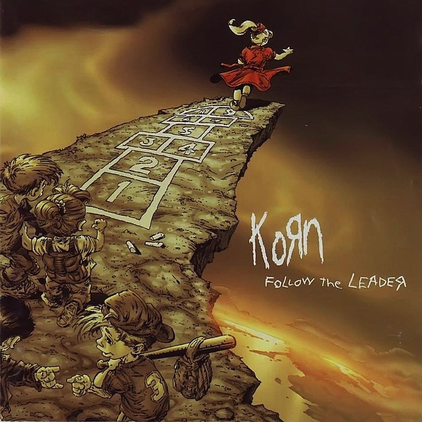
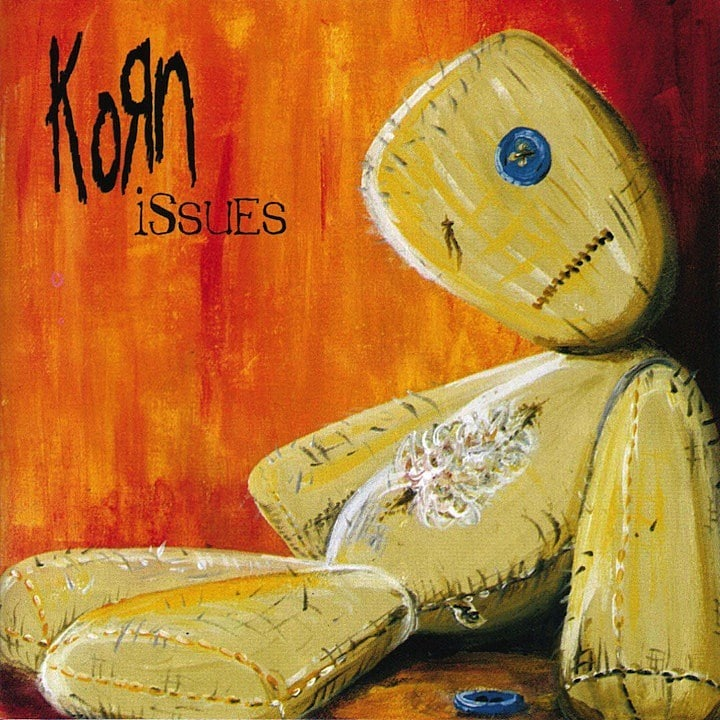

KORN (1994)

Sinceramente, la elección del mejor álbum de KORN no ha sido nada fácil. Nosotros cedemos este puesto a su disco debut, lanzado en 1994, en una época en donde no existía ninguna banda que sonara como los estadounidenses. Sin duda alguna, "Korn" fue un álbum mágico que no solo introdujo a la banda ante el gran público metalero
Discos de KORN
DISCOS CON MAS PREMIOS
KORN (1994)
Sinceramente, la elección del mejor álbum de KORN no ha sido nada fácil. Nosotros cedemos este puesto a su disco debut, lanzado en 1994, en una época en donde no existía ninguna banda que sonara como los estadounidenses. Sin duda alguna, "Korn" fue un álbum mágico que no solo introdujo a la banda ante el gran público metalero, sino que también fue la carta de presentación del productor Ross Robinson en sus primeros años de carrera. El trabajo de guitarra y batería de "Blind" es una de las aperturas más aclamadas en el rock, y canciones como "Need To", "Shoots and Ladders", "Clown", "Faget" y "Daddy" son temas clave en la historia de la banda. "Korn" solo alcanzó el número 72 en la lista de álbumes Billboard 200, pero ha sido acreditado como el punto de partida para lo que eventualmente sería el género nu metal y regularmente aparece en las listas de críticos como un clásico de todos los tiempos.
Follow the Leader (1998)
Para mas informacion Después de que KORN generara legiones de fans con sus dos primeros trabajos, la banda explotó con su tercer álbum, "Follow the Leader". Cuando el nu metal comenzó a convertirse en un sonido que gustaba en la radio, la banda se empezó a posicionar para cosechar su recompensa. El disco le dio a la banda su primer top-chart, debido en parte al éxito de su principal sencillo "Got the Life". Otros temas que captaron la atención tanto de sus fans como de la crítica musical fueron "All in the Family", "Children of the Korn" y "B.B.K.". Otras pistas como "Reclaim My Place", "Justin" y "Dead Bodies Everywhere" hacen que "Follow the Leader" sea un álbum fácil y agradable de escuchar de arriba a abajo.
Issues (1999)
Para mas informacion Echando un vistazo atrás, podemos decir que KORN alcanzó su punto más alto en 1999 con el lanzamiento de su disco "Issues". La banda encabezó la lista de éxitos de Billboard y llegó a conseguir triples discos de platino. El trabajo, producido por Brendan O'Brien, incluyó el single triunfador "Falling Away From Me". Además no podemos olvidar temas como "Make Me Bad" y "Somebody Someone", que agregaron elementos básicos a un creciente catálogo de éxitos. Con 16 temas, "Issues" también destaca como uno de los álbumes más largos de la banda y uno de los más aclamados por sus fans.